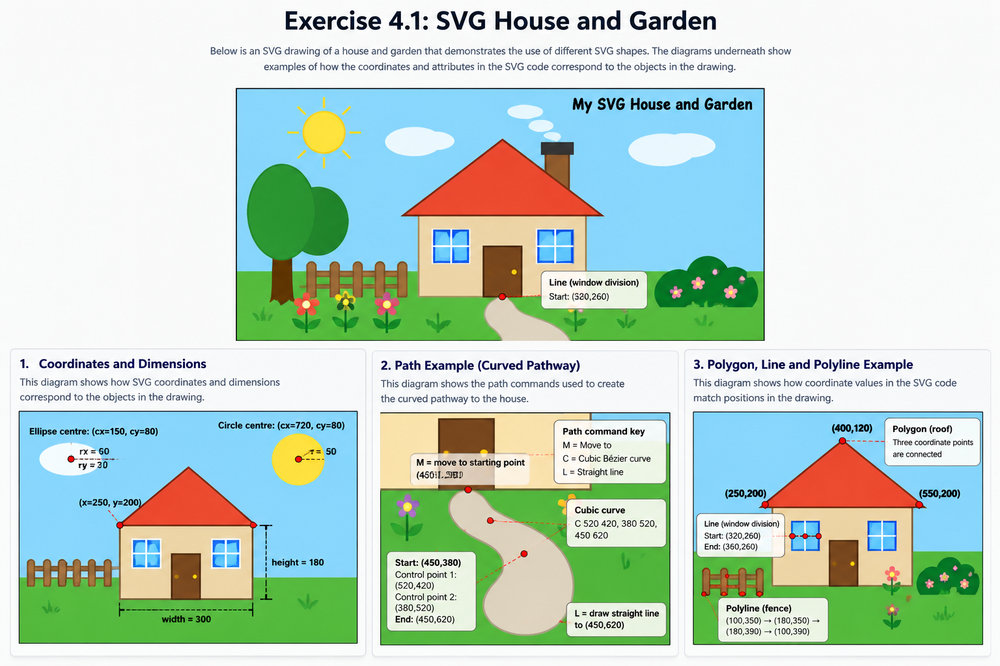

House
Rectangles form the walls, door and chimney. A polygon creates the roof.
STEP 1 · CREATE A PICTURE
The illustration below demonstrates the different SVG primitives requested in Exercise 4.1.

STEP 2 · COORDINATE SYSTEM
SVG coordinates start at the top-left corner. The x-coordinate increases from left to right, while the y-coordinate increases from top to bottom.
(300, 245). Changing x moves the shape horizontally; changing y moves it vertically.STEP 3 · CUSTOMISE YOUR PICTURE
The picture was customised with a chimney, garden fence, flowers, tree, bushes, curved pathway, colours, strokes and labels.
Rectangles form the walls, door and chimney. A polygon creates the roof.
Circles, ellipses, lines and a polyline create the flowers, tree and garden features.
A curved <path> creates the walkway leading to the front door.
<text> elements label the drawing and demonstrate annotation.
STEP 4 · GROUP ELEMENT
The two windows are placed inside one group so common styling can be applied to both. Translation is then used to position the second window.
SHAPE CHECKLIST
House, door, chimney, ground and windows.
Sun, flowers and door handle.
Clouds and tree canopy.
Window divisions, fence, flower stems and annotations.
Garden bush outline.
Triangular roof.
Curved garden pathway.
Title, coordinate annotation and garden label.